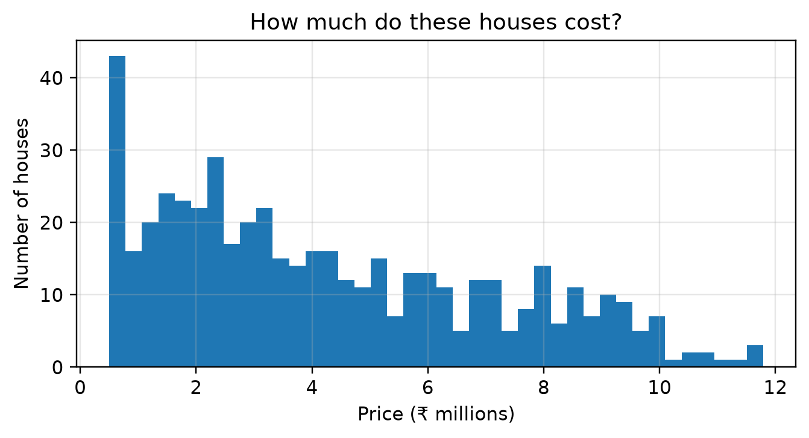
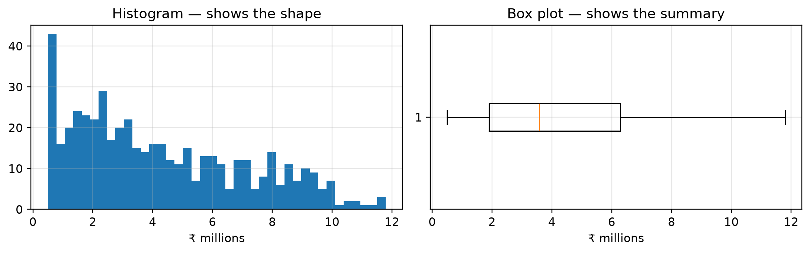
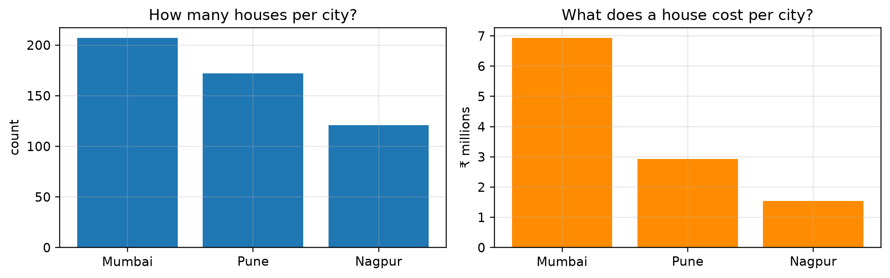
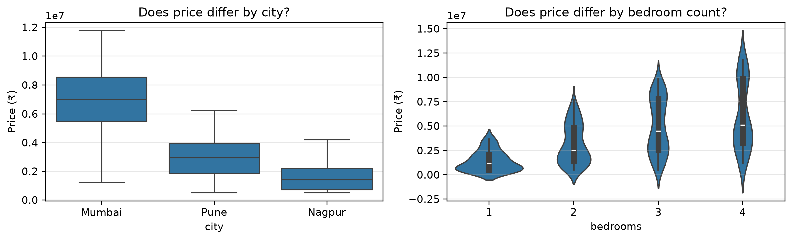
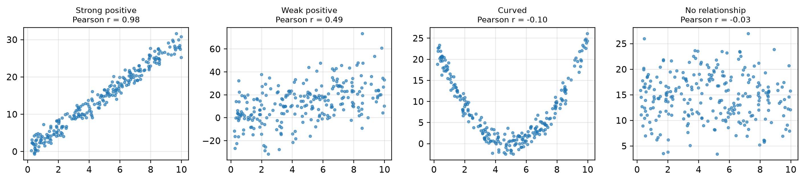
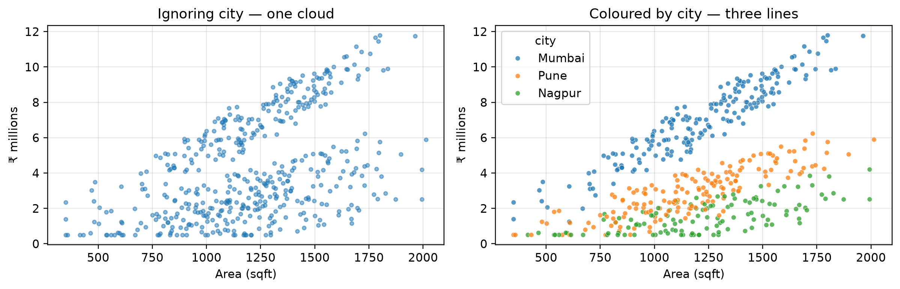
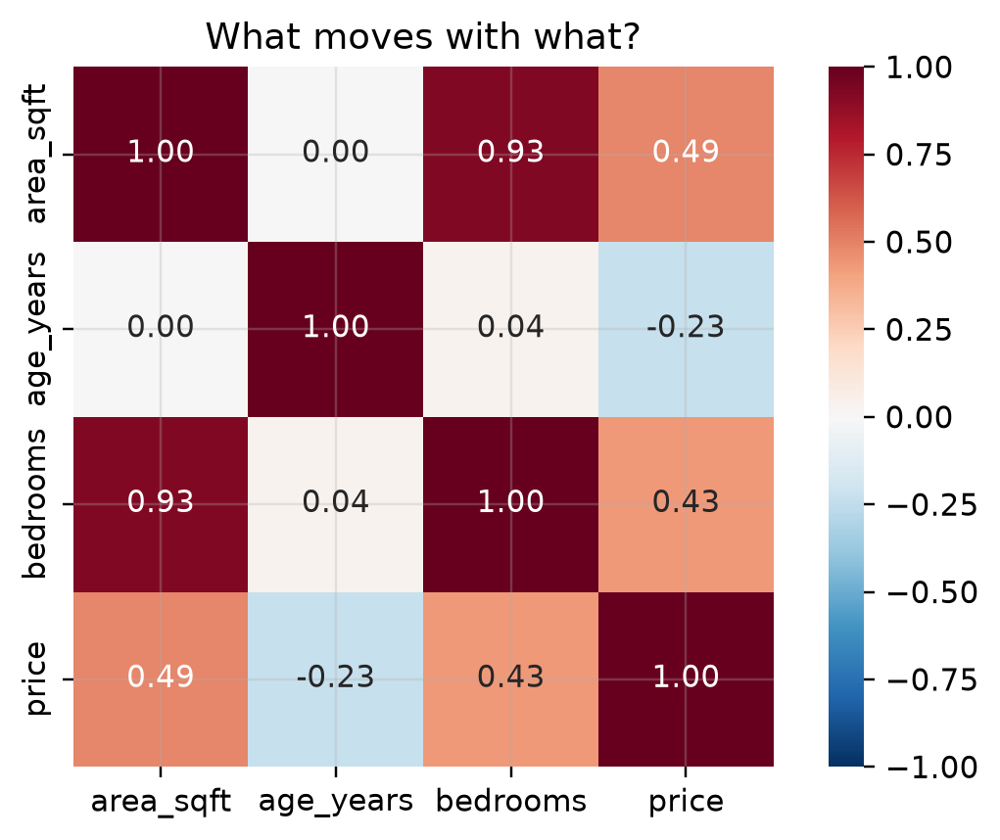
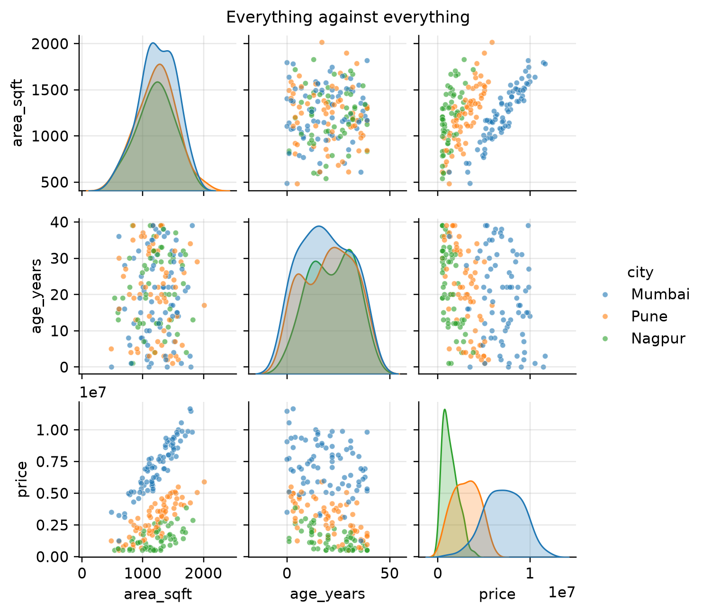

This chapter is about looking at data before you model it — and drawing charts that answer a question rather than decorate a page.
Assumed knowledge: Session 7 — mean, median, spread, quartiles, skewness. A box plot is a drawn five-number summary, so that chapter has to come first.
The one idea to take away:every chart must have a question attached. A chart drawn without one will show you a pattern, because the eye finds patterns in anything.
10.1 🎯 Learning outcomes
By the end of this chapter you can:
Run a structured first pass over an unfamiliar dataset.
Choose the right chart for a question using a lookup table.
Draw histograms, box plots, bar charts, scatter plots and heatmaps.
Build a pivot table and read it.
Compute and interpret Pearson and Spearman correlation.
Explain why a strong correlation does not establish a cause, with an example.
Exploratory Data Analysis is the deliberate look at a dataset before modelling it — to understand what is there, to find problems, and to form the questions worth asking.
Tip🧠 Analogy — the doctor’s examination
A doctor does not begin with surgery. They take a pulse, listen to the chest, ask questions. Most of it finds nothing — and that is the point. The examination rules things out, and occasionally finds something that changes the plan entirely.
Skipping EDA is operating without examining. It works right up until it does not.
Five questions, asked in this order, on every new dataset:
#
Question
Tool
1
How big is it, and what type is each column?
.shape, .info()
2
What does each column look like on its own?
histogram, box plot, .value_counts()
3
What is missing or impossible?
.isna().sum(), .describe()
4
Which columns move together?
scatter plot, correlation
5
What differs between groups?
groupby, pivot table
11.1.1 The dataset for this chapter
datasets/city_homes.csv — 500 properties across three cities, with 25 areas unrecorded, because real files have gaps.
import numpy as np, pandas as pdhomes = pd.read_csv("datasets/city_homes.csv")print(f"1. SHAPE — {homes.shape[0]} rows, {homes.shape[1]} columns\n")homes.info()print("\n3. MISSING VALUES per column:")print(homes.isna().sum())
Matplotlib is Python’s base plotting library. Almost every chart follows the same four steps.
Step
Code
1. Make a figure and axes
fig, ax = plt.subplots()
2. Draw something on the axes
ax.hist(...), ax.scatter(...)
3. Label it
ax.set_xlabel(...), ax.set_title(...)
4. Show it
plt.show()
12.1.1 Demo 1 — the four steps
import matplotlib.pyplot as pltfig, ax = plt.subplots(figsize=(7, 3.2)) # 1. createax.hist(homes["price"] /1e6, bins=40) # 2. drawax.set_xlabel("Price (₹ millions)") # 3. labelax.set_ylabel("Number of houses")ax.set_title("How much do these houses cost?")plt.show() # 4. show

Figure 12.1: A histogram of house prices. Steps: create, draw, label, show.
Note the title. It is a question, not a label. "Price distribution" tells the reader nothing they could not see; "How much do these houses cost?" tells them what to look for.
12.2 3. Choosing the chart
The chart follows from the question and the column types — it is not a matter of taste.
Your question
Column types
Chart
How is one number spread out?
1 numeric
histogram
What is its centre, spread and outliers?
1 numeric
box plot
How many of each category?
1 categorical
bar chart
Do these two numbers move together?
2 numeric
scatter plot
Does this number differ by group?
1 numeric + 1 categorical
box plot by group
How do all my numeric columns relate?
many numeric
heatmap
How does something change over time?
time + numeric
line chart
Warning⚠️ The pie chart is almost always the wrong answer
People compare angles badly. Any pie chart with more than three slices is harder to read than the bar chart of the same data — and a bar chart can be sorted, which a pie cannot. Use a bar chart.
12.2.1 Demo 2 — histogram versus box plot: what each one hides
import matplotlib.pyplot as pltfig, ax = plt.subplots(1, 2, figsize=(10, 3.2))ax[0].hist(homes["price"] /1e6, bins=40)ax[0].set_title("Histogram — shows the shape"); ax[0].set_xlabel("₹ millions")ax[1].boxplot(homes["price"] /1e6, orientation="horizontal")ax[1].set_title("Box plot — shows the summary"); ax[1].set_xlabel("₹ millions")plt.tight_layout(); plt.show()q1, med, q3 = homes["price"].quantile([.25, .5, .75])iqr = q3 - q1flagged = ((homes["price"] < q1 -1.5*iqr) | (homes["price"] > q3 +1.5*iqr)).sum()print(f"skewness {homes['price'].skew():.2f} → the histogram shows a right lean")print(f"the box plot flags {flagged} houses as outliers by the IQR rule")print("The histogram cannot tell you that count; the box plot cannot show you the shape.")

Figure 12.2: Same column, two views. The histogram shows the shape; the box plot shows the summary and flags outliers.
skewness 0.59 → the histogram shows a right lean
the box plot flags 0 houses as outliers by the IQR rule
The histogram cannot tell you that count; the box plot cannot show you the shape.
12.2.2 Demo 3 — bar charts for categories
import matplotlib.pyplot as pltcounts = homes["city"].value_counts()means = homes.groupby("city")["price"].mean().sort_values(ascending=False) /1e6fig, ax = plt.subplots(1, 2, figsize=(10, 3.2))ax[0].bar(counts.index, counts.values)ax[0].set_title("How many houses per city?"); ax[0].set_ylabel("count")ax[1].bar(means.index, means.values, color="darkorange")ax[1].set_title("What does a house cost per city?"); ax[1].set_ylabel("₹ millions")plt.tight_layout(); plt.show()print(counts.to_string())

Figure 12.3: Counts, and the average price per city. Two different questions, two different bars.
city
Mumbai 207
Pune 172
Nagpur 121
Two bar charts of the same column that answer completely different questions. The left one is about how the data was collected; the right one is about houses.
12.3 4. Seaborn: statistical charts in one line
Seaborn sits on top of matplotlib and knows about DataFrames. What takes six lines in matplotlib usually takes one in seaborn.
12.3.1 Demo 4 — grouped box plots, which is where seaborn earns its place
import seaborn as snsimport matplotlib.pyplot as pltfig, ax = plt.subplots(1, 2, figsize=(11, 3.4))sns.boxplot(data=homes, x="city", y="price", ax=ax[0])ax[0].set_title("Does price differ by city?")sns.violinplot(data=homes, x="bedrooms", y="price", ax=ax[1])ax[1].set_title("Does price differ by bedroom count?")for a in ax: a.set_ylabel("Price (₹)")plt.tight_layout(); plt.show()print(homes.groupby("city")["price"].agg(["count", "median"]).round(0))

Figure 12.4: Price by city, and by number of bedrooms. One line each.
count median
city
Mumbai 207 6994000.0
Nagpur 121 1413000.0
Pune 172 2944500.0
A violin plot is a box plot with the distribution’s shape drawn on it. Use it when the shape matters — for instance when a group is secretly two groups.
13 Part C — Two columns together
13.1 5. Scatter plots
A scatter plot puts one column on each axis and one dot per row. It is the fastest way to see whether two numbers are related, and what kind of relationship it is.
13.1.1 Demo 5 — four relationships, four shapes
import numpy as np, matplotlib.pyplot as pltimport pandas as pdrel = pd.read_csv("datasets/four_relationships.csv")x = rel["x"].valuespairs = {"Strong positive": rel["strong_positive"].values,"Weak positive": rel["weak_positive"].values,"Curved": rel["curved"].values,"No relationship": rel["unrelated"].values,}fig, axes = plt.subplots(1, 4, figsize=(13, 3))for ax, (name, y) inzip(axes, pairs.items()): ax.scatter(x, y, s=8, alpha=.6) ax.set_title(f"{name}\nPearson r = {np.corrcoef(x, y)[0,1]:.2f}", fontsize=9)plt.tight_layout(); plt.show()

Figure 13.1: Strong positive, weak, curved, and none. Only the first is safe for a straight-line model.
Look at the curved one. Its correlation is near zero, and yet x predicts y almost perfectly — just not with a straight line. Correlation only measures straight- line relationships, which is the single most important limitation to remember.
13.1.2 Demo 6 — the real data
import seaborn as sns, matplotlib.pyplot as pltfig, ax = plt.subplots(1, 2, figsize=(11, 3.6))ax[0].scatter(homes["area_sqft"], homes["price"]/1e6, s=10, alpha=.5)ax[0].set_xlabel("Area (sqft)"); ax[0].set_ylabel("₹ millions")ax[0].set_title("Ignoring city — one cloud")sns.scatterplot(data=homes, x="area_sqft", y=homes["price"]/1e6, hue="city", s=18, alpha=.75, ax=ax[1])ax[1].set_xlabel("Area (sqft)"); ax[1].set_ylabel("₹ millions")ax[1].set_title("Coloured by city — three lines")plt.tight_layout(); plt.show()for c in ["Mumbai", "Pune", "Nagpur"]: sub = homes[homes["city"] == c].dropna() r = sub["area_sqft"].corr(sub["price"])print(f"{c:<8}{len(sub):>3} houses, area–price correlation {r:.2f}")

Figure 13.2: Area against price, coloured by city. The colour reveals three separate relationships.
Adding one colour changed the finding. The left chart says “bigger houses cost more, roughly”. The right chart says “bigger houses cost more at a different rate in each city” — which is a far more useful statement, and a modelling instruction.
13.2 6. Correlation
Correlation puts a number on how strongly two columns move together. It runs from −1 to +1.
Value
Meaning
+1
perfect: when one rises, the other rises exactly in step
+0.7
strong positive
0
no straight-line relationship
−0.7
strong negative: one rises as the other falls
−1
perfect negative
Two kinds, and they answer different questions:
Kind
Measures
Use when
Pearson
straight-line relationship
the relationship looks linear
Spearman
whether they rise together in rank order
the relationship is curved but consistently increasing
13.2.1 Demo 7 — when Pearson and Spearman disagree
import numpy as np, pandas as pdcubic = pd.read_csv("datasets/cubic_pair.csv") # perfectly related, but curvedx, y = cubic["x"], cubic["x_cubed"]print(f"Pearson r = {x.corr(y, method='pearson'):.3f} (straight-line strength)")print(f"Spearman r = {x.corr(y, method='spearman'):.3f} (rank agreement)")print("\nSpearman is exactly 1.0: every time x goes up, y goes up. Always.")print("Pearson is below 1.0 because the relationship is a curve, not a line.")
Pearson r = 0.919 (straight-line strength)
Spearman r = 1.000 (rank agreement)
Spearman is exactly 1.0: every time x goes up, y goes up. Always.
Pearson is below 1.0 because the relationship is a curve, not a line.
Tip🧠 Analogy — two dancers
Pearson asks: do they move in step, by the same amount, at the same time?
Spearman asks only: when one steps forward, does the other step forward too? It does not care by how much.
A pair who always move together but with very different stride lengths score perfectly on Spearman and poorly on Pearson.
13.2.2 Demo 8 — the correlation heatmap
import seaborn as sns, matplotlib.pyplot as pltnumeric = homes.select_dtypes("number")corr = numeric.corr()fig, ax = plt.subplots(figsize=(5.5, 4))sns.heatmap(corr, annot=True, fmt=".2f", cmap="RdBu_r", center=0, vmin=-1, vmax=1, square=True, ax=ax)ax.set_title("What moves with what?")plt.tight_layout(); plt.show()print("Correlation with price, strongest first:")print(corr["price"].drop("price").sort_values(key=abs, ascending=False).round(3))

Figure 13.3: Every numeric pair at once. Read the row for your target column first.
Read the price row first — it ranks your predictors. Then look for very high correlations between predictors: area_sqft and bedrooms are nearly the same column, because bedrooms were derived from area. Keeping both tells a model the same fact twice.
Warning⚠️ Correlation is not causation
Ice cream sales correlate strongly with drowning deaths. Ice cream does not cause drowning: hot weather causes both. A third variable driving two others is called a confounder, and it produces most of the spurious correlations you will meet.
Three things a correlation can mean:
A causes B
B causes A
C causes both — usually this one
A correlation is a question worth investigating, never an answer.
13.2.3 Demo 9 — a confounder, manufactured so you can see it
import numpy as np, pandas as pddf = pd.read_csv("datasets/icecream_drownings.csv").rename( columns={"temperature_c": "temperature", "ice_cream_sales": "ice_cream"})print(f"ice cream vs drownings : r = {df['ice_cream'].corr(df['drownings']):.3f} ← strong!")print(f"temperature vs ice cream: r = {df['temperature'].corr(df['ice_cream']):.3f}")print(f"temperature vs drownings: r = {df['temperature'].corr(df['drownings']):.3f}")# Hold temperature roughly constant and the relationship disappears.hot_days = df[(df["temperature"] >30) & (df["temperature"] <33)]print(f"\nAmong days between 30-33°C only ({len(hot_days)} days):")print(f"ice cream vs drownings : r = {hot_days['ice_cream'].corr(hot_days['drownings']):.3f} ← collapsed")
ice cream vs drownings : r = 0.788 ← strong!
temperature vs ice cream: r = 0.953
temperature vs drownings: r = 0.831
Among days between 30-33°C only (48 days):
ice cream vs drownings : r = 0.233 ← collapsed
The relationship collapsed when temperature was held still — from 0.79 to a value close to zero. That collapse is the signature of a confounder. In the code above we know the truth because we wrote it. With real data you cannot see the arrows — you can only test them.
14 Part D — Many columns at once
14.1 7. Pivot tables
A pivot table summarises one numeric column across two categorical columns — one down the rows, one across the columns. It is the same operation as a groupby, arranged into a grid that a person can read.
14.1.1 Demo 10 — the same data as a groupby and as a pivot
import pandas as pdprint("As a groupby — correct, but hard to scan:")print(homes.groupby(["city", "bedrooms"])["price"].mean().round(-3).head(8))print("\nAs a pivot table — the same numbers, laid out to compare:")pivot = homes.pivot_table(index="city", columns="bedrooms", values="price", aggfunc="mean").round(-3)print(pivot)
As a groupby — correct, but hard to scan:
city bedrooms
Mumbai 1 2448000.0
2 5275000.0
3 7751000.0
4 10353000.0
Nagpur 1 538000.0
2 1101000.0
3 1639000.0
4 2577000.0
Name: price, dtype: float64
As a pivot table — the same numbers, laid out to compare:
bedrooms 1 2 3 4
city
Mumbai 2448000.0 5275000.0 7751000.0 10353000.0
Nagpur 538000.0 1101000.0 1639000.0 2577000.0
Pune 973000.0 2048000.0 3449000.0 4898000.0
Now the comparison is easy in both directions: read across a row to see what an extra bedroom is worth in that city; read down a column to see what the same house costs in different cities.
print("How many houses in each combination? (check before trusting an average)")print(homes.pivot_table(index="city", columns="bedrooms", values="price", aggfunc="count", fill_value=0))print("\nMedian price per square foot, by city and age band:")homes["age_band"] = pd.cut(homes["age_years"], [0, 10, 20, 40], labels=["new", "middle", "old"], include_lowest=True)homes["price_per_sqft"] = homes["price"] / homes["area_sqft"]print(homes.pivot_table(index="city", columns="age_band", values="price_per_sqft", aggfunc="median", observed=True).round(0))
How many houses in each combination? (check before trusting an average)
bedrooms 1 2 3 4
city
Mumbai 11 66 110 20
Nagpur 9 37 56 19
Pune 10 65 78 19
Median price per square foot, by city and age band:
age_band new middle old
city
Mumbai 6410.0 5971.0 5218.0
Nagpur 1817.0 1207.0 698.0
Pune 3249.0 2703.0 1932.0
Warning⚠️ Always check the counts behind an average
The count table above exists for a reason. An average computed from two houses sits in the grid looking exactly as authoritative as one computed from two hundred. Print the counts next to any pivot of means, or you will act on a cell backed by nothing.
14.1.3 Demo 12 — the pair plot: everything against everything
import seaborn as sns, matplotlib.pyplot as pltsample = homes[["area_sqft", "age_years", "price", "city"]].dropna().sample(200, random_state=1)g = sns.pairplot(sample, hue="city", height=1.9, plot_kws={"s": 14, "alpha": .6})g.figure.suptitle("Everything against everything", y=1.02, fontsize=11)plt.show()

Figure 14.1: Every numeric column against every other. The diagonal shows each column’s own distribution.
This one chart runs the whole of Part C at once. It is usually the first thing to draw on a new dataset with fewer than about ten numeric columns — and the last thing to draw on one with fifty, where it becomes unreadable.
14.1.4 Demo 13 — the full first pass, as a function
import pandas as pddef first_look(df, target=None):"""The five EDA questions, answered in order."""print(f"1. SIZE {df.shape[0]:,} rows × {df.shape[1]} columns") num = df.select_dtypes("number").columns.tolist() cat = df.select_dtypes(exclude="number").columns.tolist()print(f" numeric {num}")print(f" other {cat}") miss = df.isna().sum() miss = miss[miss >0]print(f"\n2. MISSING {'none'if miss.empty else miss.to_dict()}")print("\n3. SHAPE OF EACH NUMERIC COLUMN")for c in num: s = df[c].dropna() lean ="right"if s.skew() >.5else"left"if s.skew() <-.5else"symmetric"print(f" {c:<16} median {s.median():>12,.0f} skew {s.skew():>6.2f} ({lean})")print("\n4. CATEGORY COUNTS")for c in cat:print(f" {c:<16}{df[c].value_counts().to_dict()}")if target:print(f"\n5. WHAT MOVES WITH {target.upper()}")print(df[num].corr()[target].drop(target).sort_values(key=abs, ascending=False).round(3).to_string())first_look(homes[["area_sqft", "age_years", "bedrooms", "price", "city"]], target="price")
1. SIZE 500 rows × 5 columns
numeric ['area_sqft', 'age_years', 'bedrooms', 'price']
other ['city']
2. MISSING {'area_sqft': 25}
3. SHAPE OF EACH NUMERIC COLUMN
area_sqft median 1,209 skew -0.18 (symmetric)
age_years median 19 skew 0.07 (symmetric)
bedrooms median 3 skew -0.17 (symmetric)
price median 3,582,500 skew 0.59 (right)
4. CATEGORY COUNTS
city {'Mumbai': 207, 'Pune': 172, 'Nagpur': 121}
5. WHAT MOVES WITH PRICE
area_sqft 0.488
bedrooms 0.432
age_years -0.229
14.1.5 ❓ Check yourself
Q1. You want to know whether house prices differ between three cities. Which chart?
A scatter plot.
A box plot of price grouped by city.
A pie chart of cities.
Q2. Two columns have a Pearson correlation of 0.02, but the scatter plot shows a clear U shape. What does that mean?
The correlation was computed wrongly.
They are strongly related, but not in a straight line — Pearson cannot see it.
They are unrelated.
Q3.area_sqft and bedrooms correlate at 0.93. What should you do?
Nothing; strong correlations are good.
Note that they carry nearly the same information, and consider keeping only one.
Delete both.
Q4. A pivot table cell shows an average price of ₹4.2 crore. What must you check before quoting it?
That the currency is correct.
How many rows that average is computed from.
Whether the column is numeric.
NoteAnswers
A1 — (b). One numeric column split by one categorical column — the box-plot-by-group row of the chart chooser.
A3 — (b). In this dataset bedrooms were derived from area, so they genuinely are one fact. Session 6’s feature selection is the tool.
A4 — (b). Demo 11’s warning. An average of two houses looks identical to an average of two hundred.
15 🎯 Tasks
Note✏️ Practise
Task 1 — Match the chart. Which chart for each: the spread of exam marks; how many students per department; whether study hours relate to marks; how marks differ between departments; how enrolment changed over ten years.
Task 2 — Find the confounder. In Demo 9, change the temperature range in the final filter to 20–23°C. Report the correlation. Then explain in one sentence what holding temperature constant does.
Task 3 — Read the heatmap. From Demo 8, list the columns you would give a price-prediction model, and name any pair you would not include together.
Task 4 — Pivot with counts. Build a pivot table of median price_per_sqft by city and age_band, and print the matching count table beside it. Identify any cell you would refuse to quote.
NoteSolutions
print("Task 1")print(" spread of exam marks → histogram (shape) or box plot (summary)")print(" students per department → bar chart")print(" study hours vs marks → scatter plot")print(" marks by department → box plot grouped by department")print(" enrolment over ten years → line chart")print()print("Task 3")print(" Give the model: area_sqft, age_years, and city (one-hot encoded).")print(" Do NOT include area_sqft and bedrooms together — they correlate at 0.93")print(" because bedrooms was derived from area. Keep area_sqft; it is finer-grained.")
Task 1
spread of exam marks → histogram (shape) or box plot (summary)
students per department → bar chart
study hours vs marks → scatter plot
marks by department → box plot grouped by department
enrolment over ten years → line chart
Task 3
Give the model: area_sqft, age_years, and city (one-hot encoded).
Do NOT include area_sqft and bedrooms together — they correlate at 0.93
because bedrooms was derived from area. Keep area_sqft; it is finer-grained.